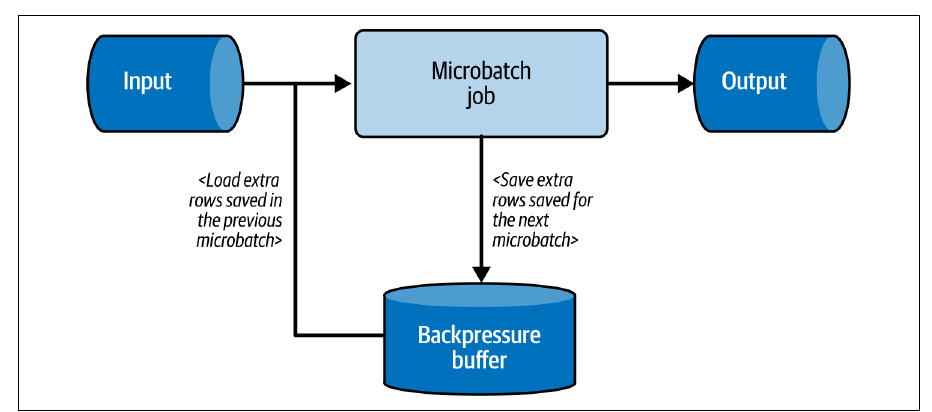
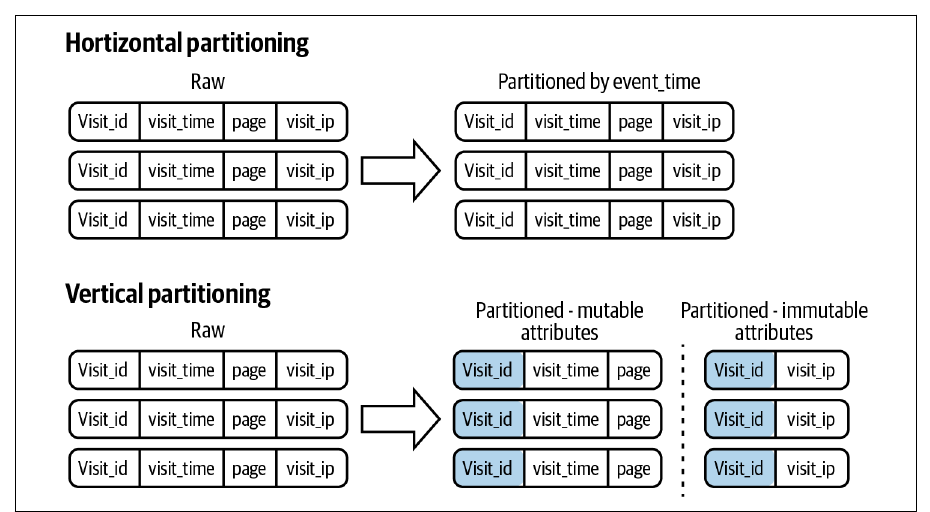
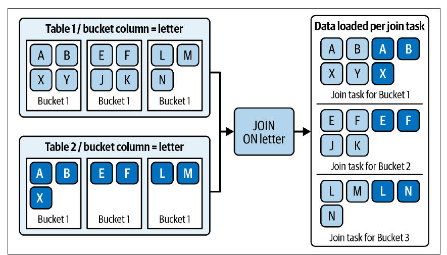
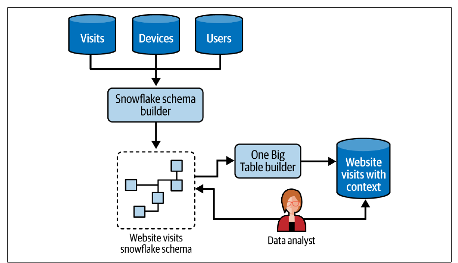

Chapter 8 · pp. 233–271
Data Storage Design Patterns
Data Engineering Design Patterns, 1st Edition
There are two ways to make queries and jobs faster: add compute (quick, but reactive and costly), or organize data wisely in advance — the subject of this chapter's nine patterns (pp. 233–234). Partitioning: the Horizontal Partitioner puts whole rows into physically isolated locations by a low-cardinality key such as event time; the Vertical Partitioner splits each row's attributes into separate places. Records organization handles high-cardinality columns: the Bucket pattern colocates groups of keys by hash(key) % buckets (enabling bucket pruning and shuffle-free joins), and the Sorter orders data — lexicographically or along a Z-order curve — so readers can skip blocks. Read performance: the Metadata Enhancer keeps statistics (Parquet footers, commit logs, table stats) to filter before reading; the Dataset Materializer precomputes costly queries as materialized views or tables; the Manifest records file lists so readers don't have to list object stores. Data representation: the Normalizer (normal forms, snowflake schema) favours consistency at the price of joins; the Denormalizer (One Big Table, star schema) removes joins but duplicates data.
The chapter’s own outline (from the book’s table of contents)
- Partitioning — p. 234
- Pattern: Horizontal Partitioner — p. 234
- Pattern: Vertical Partitioner — p. 240
- Records Organization — p. 243
- Pattern: Bucket — p. 243
- Pattern: Sorter — p. 246
- Read Performance Optimization — p. 251
- Pattern: Metadata Enhancer — p. 251
- Pattern: Dataset Materializer — p. 254
- Pattern: Manifest — p. 257
- Data Representation — p. 260
- Pattern: Normalizer — p. 260
- Pattern: Denormalizer — p. 266
- Summary — p. 271
From the book
Introduction
Waiting more than two minutes — or ten — for a query is common in big data; the faster a job runs, the earlier and (hopefully) cheaper the answer (p. 233). Adding compute is quick but often a reaction under pressure; the alternative is preemptive data organization (p. 233).
flowchart LR
A["Partitioning<br/>(low cardinality)"] --> B["Records organization<br/>(high cardinality: buckets, sorting)"]
B --> C["Read optimization<br/>(metadata, materialization, manifests)"]
C --> D["Representation<br/>(normalize vs denormalize)"]From the book
Partitioning
The first layout question: how to divide the dataset so it's easy to access — horizontally or vertically (p. 234).
Partitioning
Pattern: Horizontal Partitioner
pp. 234–239Problem. A batch job computing rolling aggregates over the past four days slows down as data grows; filtering out older records takes longer. More compute helped but raised costs (p. 234).
Solution (pp. 234–236). Choose a partitioning attribute (a distribution key); each value gets a physically isolated storage space. Time is the classic choice, taken from either:
| Source of time | Effect |
|---|---|
| Job execution context | Every record of a run lands in the run date's partition (e.g. 2024-12-31) |
| The dataset (event time) | Because of late data, one run may write several partitions |
Business keys (customer, partner, region) also work, and keys can be nested — e.g. visits/2024/05/05/france|india|poland|usa (Example 8-1). Partitions are either declarative (CREATE TABLE … PARTITIONED BY in Databricks or BigQuery — producers needn't know) or producer-defined (Spark partitionBy, a custom Kafka partitioner) (p. 235). Some stores keep partition metadata: BigQuery INFORMATION_SCHEMA.PARTITIONS, Databricks DESCRIBE TABLE EXTENDED, Iceberg's partitions view (p. 236). Partitioning also underpins idempotency (Fast Metadata Cleaner, Ch. 4).
Consequences (pp. 236–237):
| Granularity and metadata overhead | Partitioning a site with one million daily users by username creates one million partitions — slow listings, many small files. Use low-cardinality attributes (event time to the hour or day); for IoT device IDs use Bucket |
| Skew | In micro-batch streaming, the biggest partition sets the batch duration; a backpressure buffer defers the skewed partition's extra records to the next micro-batch (Figure 8-1), raising its latency but keeping others near real time |
| Mutability | Changing the key moves all data; Iceberg supports partition evolution at the metadata layer — old files stay in the old layout |


Partitioning vs sharding (p. 237): sharding splits a dataset across machines — a special case of horizontal partitioning at the hardware layer.
Examples (pp. 238–239): Spark adds year/month/day/hour columns from change_date and calls .partitionBy('year','month','day','hour'); a Java Kafka RangePartitioner sends keys A and B to partition 0 and everything else to 1, registered with partitioner.class — but keep it simple and usually stick to default partitioners; PostgreSQL PARTITION BY RANGE(event_time) with one PARTITION OF table per day.
Partitioning
Pattern: Vertical Partitioner
pp. 240–242The storage-oriented counterpart of Chapter 7's security pattern (p. 240).
Problem. Visits carry mutable attributes (visit time, page) and immutable ones (IP address); store the immutable information only once per visit (p. 240).
Solution (p. 240): classify attributes into groups, pick a join attribute (visit_id), and write each group to its own table or directory. Beyond saving storage, each part can have its own retention and access policies. Figure 8-2 contrasts moving a whole row (horizontal) with splitting it (vertical).


Consequences (p. 241): domain split — related attributes live apart, so document them; querying — rejoining is harder, so expose a view or a Dataset Materializer; data producer — producers must split rows and do several writes.
Examples (pp. 241–242): Spark persist()s the input (to avoid reading it twice), writes visits with user_id and the context.user/context.technical fields dropped, and writes deduplicated user and technical contexts to separate Delta tables; PostgreSQL uses INSERT INTO … SELECT DISTINCT or a CREATE TABLE … AS SELECT (CTAS).
From the book
Records organization
Partitioning is rudimentary and fails for high-cardinality attributes; these patterns colocate records more cleverly (p. 243).
Records organization
Pattern: Bucket
pp. 243–245Problem. 80% of queries filter on a business attribute whose cardinality is too high for partitioning — it would hit the store's metadata limits (p. 243).
Solution (pp. 243–244). Pick bucket columns (a secondary grouping inside partitions) and a number of buckets; each key goes to hash(key) % buckets. More buckets → smaller buckets. Two optimizations follow:
| Optimization | How |
|---|---|
| Bucket pruning | A predicate on the bucket column lets the engine compute the bucket and skip all others |
| Shuffle elimination | Joining two tables with identical bucketing loads matching buckets into the same join task, without the network exchange of the Distributed Aggregator (Figure 8-3) |
Bucketing was popularized by Apache Hive and is available in Spark and AWS Athena (p. 244).


Consequences (p. 245): mutability — changing the column or bucket count requires a backfill; bucket size — sizing for today's volume gives big buckets later; sizing for predicted volume may be wrong and creates more buckets than needed meanwhile.
Examples (p. 245): Athena applies bucketing logically to data already on S3 (so INSERT INTO a bucketed table errors): CLUSTERED BY (user_id) INTO 50 BUCKETS with 'bucketing_format' = 'spark'; Spark writes with bucketBy(50, 'user_id').saveAsTable(…).
Try it
Bucket pruning and Z-order skipping
Open full screen ↗ · the simulation is the vault’s own model of the mechanism the book describes.
Records organization
Pattern: Sorter
pp. 246–251Problem. Weekly tables (for the Fast Metadata Cleaner) eased maintenance but not query time; most queries filter or sort by event time (p. 246).
Solution (pp. 246–249): declare the sort column(s) at table creation; the database stores rows in that order, and queries on the sort columns skip irrelevant blocks via per-block metadata (min/max ranges, Figure 8-4). Curved sorts such as Z-order colocate rows in multidimensional space instead of lexicographic order; Iceberg and Delta Lake implement it natively. In Figure 8-5, for a predicate over columns x and y, the lexicographic layout reads nine blocks and Z-order only seven (p. 248). Redshift has Z-curve-based interleaved sort keys; BigQuery and Snowflake offer classical sorting via clustered tables (p. 249). Z-order is often called clustering, but it really sorts data on disk, so the book classifies it as a Sorter (p. 249).
Consequences (pp. 249–250):
| Unsorted segments | New writes may leave unsorted blocks; schedule sorting inside the writer (slower writes) or separately |
| Composite sort keys | Lexicographically, queries must reference the preceding sort columns: with key (visit_time, page), filtering only on page scans most blocks (Figure 8-6) |
| Mutability | Changing sort keys may re-sort the whole table |
Examples (p. 250): BigQuery PARTITION BY DATE(event_time) CLUSTER BY visit_id, page — good for both columns, weak for page alone; Delta Lake DeltaTable.forPath(…).optimize().executeZOrderBy(['visit_id', 'page']) compacts files with a curved distribution.
Read performance optimization
Pattern: Metadata Enhancer
pp. 251–254Problem. A JSON dataset partitioned by event time works for batch jobs, but new analysts querying small subsets on a pay-as-you-go service load whole partitions and only then filter (p. 251).
Solution (pp. 251–253): collect and persist statistics so engines can filter before loading. In columnar formats like Parquet, each file's footer holds per-column statistics (min, max, …) computed at write time (Figure 8-7); a query WHERE age > 50 checks footers and opens only matching files — footers still have to be read, but that's far cheaper. Delta Lake, Iceberg and Hudi inherit this and add commit-log metadata (row counts, per-column min/max, null counts), making counts and filters on nonexistent values fast. Relational databases and warehouses keep table statistics for the query planner.
Consequences (p. 253): overhead — writers compute statistics; databases must keep them current; out-of-date statistics — automatic updates trigger on thresholds (e.g. rows modified), so small changes accumulate; refresh with ANALYZE TABLE, at a temporary read cost.
Examples (pp. 253–254): Spark write.parquet(…); inspect with hangxie/parquet-tools meta, showing for the Id column NumValues: 5000, NullCount: 0, MinValue/MaxValue and SNAPPY compression; a Delta commit log's add entry with stats — numRecords: 6100, minValues, maxValues, nullCount.
Read performance optimization
Pattern: Dataset Materializer
pp. 254–257Problem. A view unions several partitioned tables to expose three weeks of data, but it reruns the query every time; consumers complain about latency (pp. 254–255).
Solution (p. 255): materialize the result — as a materialized view or a table:
| Materialized view | Table | |
|---|---|---|
| Refresh | Manual, or automatic (Redshift AUTO REFRESH YES; BigQuery, Databricks, Snowflake) — timing depends on workload, so less predictable | Your responsibility |
| Storage optimizations | Limited | Partitions, buckets, sorting available |
Consequences (pp. 255–256): refresh cost — rerunning a costly query competes with other users; use incremental refresh (supported by Databricks and BigQuery for some SQL operations, sometimes falling back to full); data access — a user denied one source table must be denied the view (or use a Fine-Grained Accessor); storage overhead — materialize only some parts.
Examples (pp. 256–257): BigQuery CREATE MATERIALIZED VIEW … OPTIONS (enable_refresh = true, refresh_interval_minutes = 15) — refreshes should run within five minutes of a change but may be delayed without capacity; PostgreSQL REFRESH MATERIALIZED VIEW dedp.windowed_visits WITH DATA; an incremental version combining Incremental Loader and Merger: MERGE INTO dedp.visits_counter from a COUNT(*) of rows with insertion_time after the previous run, UPDATE SET count = count + input.visits or INSERT.
Read performance optimization
Pattern: Manifest
pp. 257–259Problem. A fast Parquet dataset is exposed to analysts through a warehouse layer, but the slowest step is listing files in the object store (p. 257).
Solution (pp. 257–258): list once — or never, if the producer records file names. Delta Lake, Iceberg and Hudi write each transaction's files to the commit log, which acts as a manifest. Manual manifests help when many readers share a dataset (e.g. Fan-Out patterns). For writing: Redshift COPY accepts a manifest per load — useful for idempotency — and GCP Storage Transfer Service copies files from manifest listings.
Consequences (p. 258): complexity — an extra, simple step, better than repeated slow listings; size — streaming producers or many small files can produce multi-gigabyte manifests; early Spark Structured Streaming jobs sometimes couldn't restart because their manifests were too big (fixed in SPARK-27188).
Examples (p. 259): Delta generate('symlink_format_manifest') and a BigQuery external table with file_set_spec_type = 'NEW_LINE_DELIMITED_MANIFEST'; Redshift COPY customer FROM 's3://devices/manifest_20250601_1031' … MANIFEST with two "mandatory": true entries — reusable on every replay of that run.
From the book
Data representation
Which attributes are stored together, and therefore which tables exist (p. 260).
Data representation
Pattern: Normalizer
pp. 260–266Problem. The visits table repeats immutable device and OS attributes in every row: more storage, slow updates (p. 260).
Solution (pp. 260–263). Shared design steps: define business entities (visits, devices, browsers, referrals), describe their attributes, define relationships. Two implementations: normal forms (transactional workloads) and the snowflake schema (analytics).
| Normal form | Rule | Broken example (book's tables) | Fix |
|---|---|---|---|
| 1NF | Atomic, nonrepeating values; a primary key | Puzzle Tour with a list of comments (Table 8-1) | A games_comments table |
| 2NF | Non-key columns depend on the whole key | Key (name, platform); platform language depends only on platform — iOS→Swift, Android→Kotlin (Table 8-2) | A platforms table |
| 3NF | No transitive dependencies | Studio country depends on studio, not game — Studio A→Italy, Studio B→Portugal (Table 8-3) | A studios table |
A dimensional model has one fact table (an observation: an order, a visit) and dimension tables (context). In the snowflake model, dimensions are themselves described by subdimensions — a date dimension split into months and quarters (Figure 8-8) (pp. 262–263). The goal: consistency first — an update is reflected everywhere at once.
Consequences (p. 264): query cost — many joins, costly across a network; colocate small tables with big ones or broadcast them (Spark spark.sql.autoBroadcastJoinThreshold); archival — dimensions change over time (prices), handled with SCDs (Static Joiner, Ch. 5).
Examples (pp. 264–266): Figure 8-9's normalized visit — browsers and devices in their own tables (shared across visits, not dependent on one), contexts outside visits to avoid repeating groups — needs a long chain of left-outer joins in Spark (Example 8-23); the snowflake version still joins pages→categories and dates→months→quarters (Example 8-24).
Data representation
Pattern: Denormalizer
pp. 266–271Problem. A company's relational analytics model slowed as the product succeeded; 80% of queries join all eight tables (p. 266).
Solution (pp. 266–268): flatten joined values into one row, either as regular columns (One Big Table — Table 8-4: visit_id 1, user_id 409, user_name user ABC, device_id 10000, device_full_name local computer, visit_time 2024-07-01T09:00:00Z, visited_page home.html) or as nested structures (STRUCT columns). In dimensional models, the star schema keeps facts and dimensions but no nested dimensions (Figure 8-10). The patterns combine: build a normalized snowflake model, then a One Big Table from it for reading, kept in sync with Chapter 6's sequence patterns (Figure 8-11).


Consequences (pp. 268–269): costly updates — one change touches many rows; unless the table is a point-in-time snapshot, accept slower updates for faster reads. Storage — duplicated values, reduced by encodings like dictionaries ({1: "long name…", 2: …}), which can also answer existence checks without reading data. One big antipattern — a table mixing user details, past orders, the current visit and a favourite colour is a trash bag; if naming it needs many *and*s or *with*s, you've combined unrelated attributes.
Examples (pp. 269–271): One Big Table is written once with all joins and then read with a plain load (Example 8-25); the star schema writes dimension tables (with dropDuplicates) and a fact table with HASH(page) and HASH(TO_DATE(event_time)) as dimension keys — readers then need two joins (Example 8-26).
From the book
Summary
Horizontal partitioning suits low-cardinality values, vertical partitioning splits attributes; Bucket and Sorter handle high cardinality and skipping; Metadata Enhancer, Dataset Materializer and Manifest speed up reads; Normalizer and Denormalizer trade consistency for joins (p. 271). Even optimized storage won't make people use data of poor quality — the next chapter (p. 271).
Recap
Trade-offs at a glance
| Pattern | Best for | Main cost |
|---|---|---|
| Horizontal Partitioner | Low-cardinality filters (time, region) | Static key; skew; too many partitions |
| Vertical Partitioner | Separating immutable from mutable attributes | Joins; producers write several times |
| Bucket | High-cardinality filters and joins | Fixed bucket count; backfill to change |
| Sorter | Range filters, ordering | Write-time sorting; prefix-only for lexicographic keys |
| Metadata Enhancer | Skipping files and blocks | Write overhead; stale stats |
| Dataset Materializer | Repeated costly queries | Refresh cost; storage; access rules |
| Manifest | Avoiding object-store listings | Manifest size |
| Normalizer | Consistency, cheap updates | Many joins |
| Denormalizer | Fast reads | Costly updates, storage, OBT antipattern |
Recap
Key takeaways
- Partition by low-cardinality attributes: one million users per day as partition keys means one million partitions, slow listing and small files (p. 236).
- Partitioning is static: changing the key means moving all data; Iceberg's partition evolution only applies to new records (p. 237).
- For high cardinality, bucket instead:
hash(key) % Ngroups keys, enabling bucket pruning and joins without shuffle between identically bucketed tables (pp. 243–244). - Lexicographic sort keys only help prefix queries; Z-order curves help several columns at once — the book's figure reads 9 blocks lexicographically vs 7 with Z-order (pp. 248–250).
- Statistics let engines skip data before reading it, but they cost write time and can be stale (pp. 251–253).
- Materialize repeated costly queries, and refresh incrementally (Incremental Loader + Merger) where possible (pp. 254–257).
- Normalize for consistency, denormalize for reads — or both: a normalized model as the private source, a denormalized table on top (pp. 260–268).
Practice
Check yourself
Questions and answers are the vault's, written from the notes above; answers cite the book's pages.
1Why is partitioning visits by username a bad idea?Show answer
High cardinality — one million daily users would create a million partitions, slow listings and many small files. Use a low-cardinality key or the Bucket pattern (p. 236).
4What does Iceberg's partition evolution do to existing files?Show answer
Nothing — it changes the schema at the metadata layer; old records keep the old layout, new records use the new one (p. 237).
5How can a manifest make Redshift COPY idempotent?Show answer
Create the manifest before loading and tie it to the job run; any replay reuses the same file list (p. 259).
6How do you tell when a One Big Table has become an antipattern?Show answer
It mixes unrelated domain attributes; if naming it needs many conjunctions like and or with, too much is combined (p. 269).
Supplement
Beyond the book
Vault supplement — not from the book.
- Z-order (Morton order) interleaves the bits of each column's value; other space-filling curves such as the Hilbert curve preserve locality even better — Delta Lake's liquid clustering, for example, uses Hilbert curves.
- The normal forms go back to E. F. Codd's relational model (1970–71); the book stops at 3NF, but BCNF, 4NF and 5NF exist.
Next steps
Keep going
Connections
- Related chapters: 2. Data Ingestion (Compactor and the small files problem; Incremental Loader), 4. Idempotency (Fast Metadata Cleaner, Merger), 5. Data Value (Static Joiner and SCDs, Distributed Aggregator), 6. Data Flow (Fan-Out, sequence patterns), 7. Data Security (Vertical Partitioner for removal, Fine-Grained Accessor).